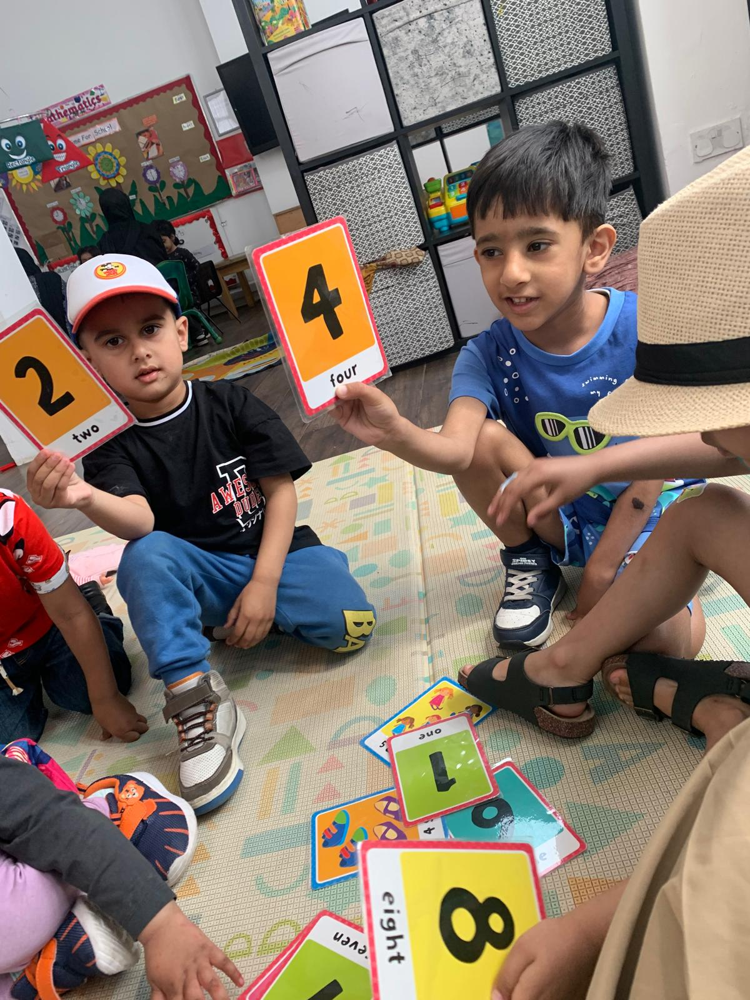
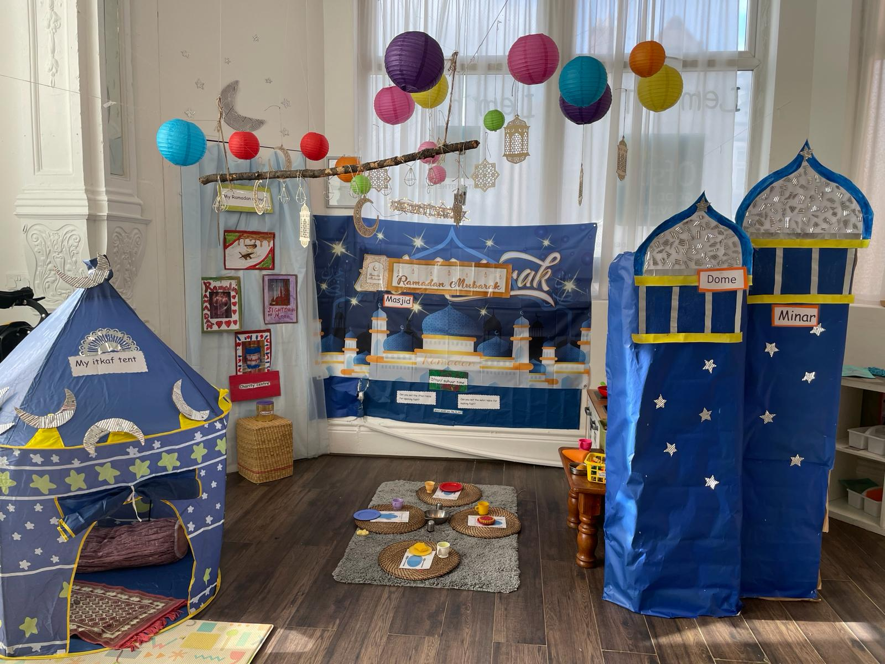

Choosing the right early years setting for your child is a big decision, especially in a city with so many childcare options. For many Manchester families, finding a trusted, child-centred place where their little ones can grow, play, and learn matters most.
In this guide, we’ll explore why Lemon Tree Nursery is often regarded as a trusted choice among top-rated nurseries in Manchester, and what features parents really value when they compare nurseries in Manchester.
A Trusted Early Years Nursery in Manchester
When parents search for a trusted nursery in Manchester, they want confidence and peace of mind. Lemon Tree Nursery Manchester is an Ofsted-registered early years provider located near Stockport Road, serving families across Greater Manchester and Cheshire. You can explore who’s behind this setting on their Key Persons page on the nursery’s site.
Ofsted, the government inspector for childcare and education, rated Lemon Tree Nursery “Good.” This means the setting meets national standards for quality of care, early learning outcomes, and safety.
Manchester itself has a strong childcare sector, with more than 90 percent of local early years settings rated Good or Outstanding by Ofsted, reflecting the city’s commitment to quality childcare. Local authority early years directories help parents compare nurseries in Manchester before deciding.
Now let’s look at what really makes this nursery different from many other options in the area.
What Makes Lemon Tree Nursery Different from Other Manchester Nurseries
So what makes this nursery stand out when parents compare options? The answer isn’t just facilities, it’s the everyday experience children have. Lemon Tree Nursery’s curriculum is closely aligned with the Early Years Foundation Stage (EYFS) framework, which you can read more about on their EYFS information page.
Play-based learning isn’t just a buzzword. It’s the framework that helps young children develop language, social skills, emotional resilience, and cognitive foundations. Alongside this, the nursery embraces diversity and celebrates different cultures, meaning children learn respect and empathy from a young age, something the General Information section highlights.
Play isn’t just play for toddlers and preschoolers; it’s how they learn best. Next, let’s explore their approach to learning in more depth.
A Child-Centred Learning Approach That Supports Early Development

The heart of a good early years setting is its support for children’s development. At Lemon Tree Nursery, the curriculum reflects EYFS principles, ensuring children have access to well-rounded learning opportunities that include communication, physical development, creativity, and understanding the world around them. You’ll find a detailed breakdown of this on their Curriculum page.
For example, during play sessions, children engage in sensory exploration, group activities, and storytelling that promote language and social interaction. These kinds of experiences build confidence long before they start school. As part of Daily Routine planning, staff guide each child’s learning through activities designed to naturally stretch their abilities.
Parents often report noticing improvements in communication and curiosity within months of starting, which aligns with research showing how early education supports cognitive and social development.
Qualified, Caring Staff Who Know Every Child Personally
One of the biggest differences between good and great nurseries is the staff. At Lemon Tree Nursery, experienced early years practitioners work closely with every child and family. You can learn more about the team’s roles on the Lemon Tree Staff page, where staff qualifications and key roles are described.
These key people take time to understand each child’s personality, learning style, and interests. When children feel secure and understood, they are more likely to thrive emotionally and socially, which is something many parents highlight on the nursery’s Feedback page.
Moreover, ongoing training in the latest early years methodologies ensures staff stay confident in supporting diverse learning needs. This is reflected in the nursery’s Policy Statements, where expectations for quality and professional conduct are clearly outlined.
Before we talk about the environment itself, it’s worth looking at the physical and safety measures in place.
A Safe, Nurturing Environment Designed for Young Children
When parents search for a “safe nursery for young children,” safety is more than secure gates and cameras. It’s about a setting where children feel emotionally supported as well as physically secure.

The nursery shares details about its safeguarding practices on its Health & Safety page, including measures for controlled access and staff training.
Indoor spaces are thoughtfully arranged to encourage exploration while maintaining a clear focus on wellbeing and supervision. The Gallery section gives parents a virtual look at learning areas, play zones, and the welcoming environment staff have created.
Outdoor play spots and physical activity opportunities are equally important for healthy development and motivation. Controlled outdoor time builds confidence, resilience, and physical skills, all part of fostering well-rounded children.
Next, parents want more than play and safety. They want open communication and honest updates.
Strong Parent Communication and Daily Updates
One of the biggest concerns parents face is not knowing what happens during the day. Open communication builds trust. Lemon Tree Nursery encourages this through daily updates and shared observations. Parents can see snapshots of learning via the nursery’s Gallery or receive summaries through daily chats with practitioners, which helps bridge the home and nursery routine.
Many modern settings use digital communication tools to share photos, activities, and progress notes, helping parents feel connected even on busy days. The nursery’s Register Child page makes it easy for new families to start the process of joining and engaging with staff right from the beginning.
This regular communication helps parents feel confident in their choice and gives them insight into their child’s daily development.
Flexible Sessions and Support for Working Families in Manchester
For many parents, childcare logistics are just as important as learning quality. Working families need flexible options that match their schedule. Lemon Tree Nursery offers a range of session options from part-day to full-day, detailed on their Sessions & Fees page.
Flexibility matters particularly in Manchester, where many parents balance work, study, and family life. Government funding for eligible families, such as 15 or 30 hours of childcare for three- and four-year-olds, can help make quality childcare more affordable. This funding is something the nursery can support parents to access, a key part of their admissions conversation.
Choosing a setting that accommodates both your needs and your child’s development helps reduce daily stress and strengthens routines. Now let’s see how this nursery compares when set beside others in the city.
Final Takeaway
Selecting the right nursery is deeply personal, and when parents compare nurseries in Manchester, they consider trust, quality of care, flexibility, and communication. Lemon Tree Nursery offers a nurturing, child-focused environment that balances learning with care, supported by experienced staff and clear communication with families.
FAQs
Is Lemon Tree Nursery suitable for toddlers and preschool children?
Yes. The nursery provides care and education aligned with the EYFS for children aged 2 to 5. Daily routines and activities are carefully planned to suit each age group’s developmental, emotional, and learning needs.
How does Lemon Tree Nursery support early learning and school readiness?
The nursery follows a structured yet playful learning approach that supports language, creativity, problem-solving, and social skills. Children learn through everyday play, guided activities, and age-appropriate challenges that prepare them for school life.
What makes Lemon Tree Nursery different from other Manchester nurseries?
Its focus on strong parent communication, an inclusive and nurturing environment, flexible session options, and a play-based learning approach makes it a parent-friendly and trusted choice in Manchester.
How does the nursery communicate with parents?
Staff maintain open communication through daily conversations, regular activity updates, and shared observations. This helps parents stay informed about their child’s progress and daily experiences.
How can parents arrange a visit or enquiry?
Parents can contact the nursery directly to arrange a visit, ask questions, and discuss available sessions. This allows families to explore the environment and understand how the nursery supports children.